mi_counties <- map_data("county", "michigan") %>%
select(lon = long, lat, group, id = subregion)
head(mi_counties)
#> lon lat group id
#> 1 -83.9 44.9 1 alcona
#> 2 -83.4 44.9 1 alcona
#> 3 -83.4 44.9 1 alcona
#> 4 -83.3 44.8 1 alcona
#> 5 -83.3 44.8 1 alcona
#> 6 -83.3 44.8 1 alcona6 Maps
You are reading the work-in-progress third edition of the ggplot2 book. This chapter should be readable but is currently undergoing final polishing.
Plotting geospatial data is a common visualisation task, and one that requires specialised tools. Typically, the problem can be decomposed into two problems: using one data source to draw a map, and adding metadata from another information source to the map. This chapter will help you tackle both problems. We’ve structured the chapter in the following way: sec-polygonmaps outlines a simple way to draw maps using geom_polygon(), which is followed in sec-sf by a modern “simple features” (sf) approach using geom_sf(). Next, sec-mapproj and sec-sfdetail discuss how to work with map projections and the underlying sf data structure. Finally, sec-rastermaps discusses how to draw maps based on raster data.
6.1 Polygon maps
Perhaps the simplest approach to drawing maps is to use geom_polygon() to draw boundaries for different regions. For this example we take data from the maps package using ggplot2::map_data(). The maps package isn’t particularly accurate or up-to-date, but it’s built into R so it’s an easy place to start. Here’s a data set specifying the county boundaries for Michigan:
In this data set we have four variables: lat and long specify the latitude and longitude of a vertex (i.e. a corner of the polygon), id specifies the name of a region, and group provides a unique identifier for contiguous areas within a region (e.g. if a region consisted of multiple islands). To get a better sense of what the data contains, we can plot mi_counties using geom_point(), as shown in the left panel below. In this plot, each row in the data frame is plotted as a single point, producing a scatterplot that shows the corners of every county. To turn this scatterplot into a map, we use geom_polygon() instead, which draws each county as a distinct polygon. This is illustrated in the right panel below.
ggplot(mi_counties, aes(lon, lat)) +
geom_point(size = .25, show.legend = FALSE) +
coord_quickmap()
ggplot(mi_counties, aes(lon, lat, group = group)) +
geom_polygon(fill = "white", colour = "grey50") +
coord_quickmap()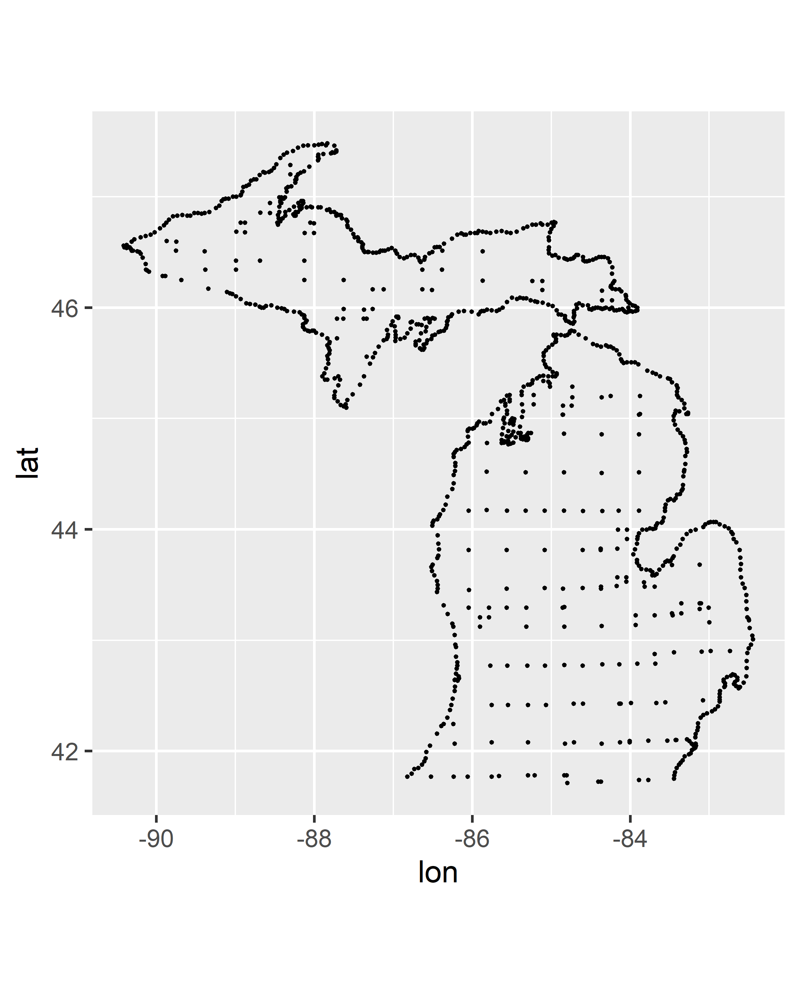
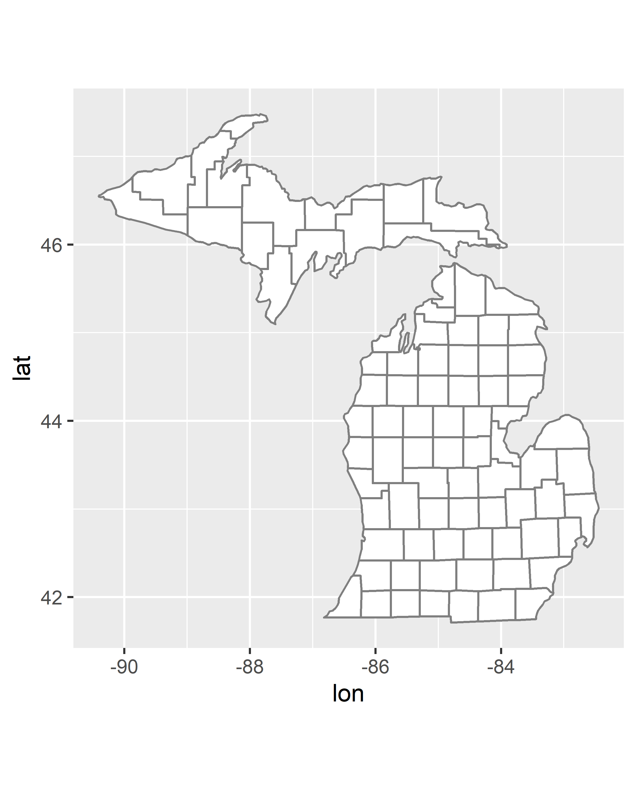
In both plots we use coord_quickmap() to adjust the axes to ensure that longitude and latitude are rendered on the same scale. sec-coord discusses coordinate systems in ggplot2 in more general terms, but as we’ll see below, geospatial data often require a more exacting approach. For this reason, ggplot2 provides geom_sf() and coord_sf() to handle spatial data specified in simple features format.
6.2 Simple features maps
There are a few limitations to the approach outlined above, not least of which is the fact that the simple “longitude-latitude” data format is not typically used in real world mapping. Vector data for maps are typically encoded using the “simple features” standard produced by the Open Geospatial Consortium. The sf package (Pebesma 2018) developed by Edzer Pebesma https://github.com/r-spatial/sf provides an excellent toolset for working with such data, and the geom_sf() and coord_sf() functions in ggplot2 are designed to work together with the sf package.
To introduce these functions, we rely on the ozmaps package by Michael Sumner https://github.com/mdsumner/ozmaps/ which provides maps for Australian state boundaries, local government areas, electoral boundaries, and so on (Sumner 2019). To illustrate what an sf data set looks like, we import a data set depicting the borders of Australian states and territories:
library(ozmaps)
library(sf)
#> Linking to GEOS 3.12.1, GDAL 3.8.4, PROJ 9.3.1; sf_use_s2() is TRUE
oz_states <- ozmaps::ozmap_states
oz_states
#> Simple feature collection with 9 features and 1 field
#> Geometry type: MULTIPOLYGON
#> Dimension: XY
#> Bounding box: xmin: 106 ymin: -43.6 xmax: 168 ymax: -9.23
#> Geodetic CRS: GDA94
#> # A tibble: 9 × 2
#> NAME geometry
#> * <chr> <MULTIPOLYGON [°]>
#> 1 New South Wales (((151 -35.1, 151 -35.1, 151 -35.1, 151 -35.1, 151 -35.2, 1…
#> 2 Victoria (((147 -38.7, 147 -38.7, 147 -38.7, 147 -38.7, 147 -38.7)),…
#> 3 Queensland (((149 -20.3, 149 -20.4, 149 -20.4, 149 -20.3)), ((149 -20.…
#> 4 South Australia (((137 -34.5, 137 -34.5, 137 -34.5, 137 -34.5, 137 -34.5, 1…
#> 5 Western Australia (((126 -14, 126 -14, 126 -14, 126 -14, 126 -14)), ((124 -16…
#> 6 Tasmania (((148 -40.3, 148 -40.3, 148 -40.3, 148 -40.3)), ((147 -39.…
#> # ℹ 3 more rowsThis output shows some of the metadata associated with the data (discussed momentarily), and tells us that the data is essentially a tibble with 9 rows and 2 columns. One advantage to sf data is immediately apparent, we can easily see the overall structure of the data: Australia is comprised of six states and some territories. There are 9 distinct geographical units, so there are 9 rows in this tibble (cf. mi_counties data where there is one row per polygon vertex).
The most important column is geometry, which specifies the spatial geometry for each of the states and territories. Each element in the geometry column is a multipolygon object which, as the name suggests, contains data specifying the vertices of one or more polygons that demark the border of a region. Given data in this format, we can use geom_sf() and coord_sf() to draw a serviceable map without specifying any parameters or even explicitly declaring any aesthetics:
ggplot(oz_states) +
geom_sf() +
coord_sf()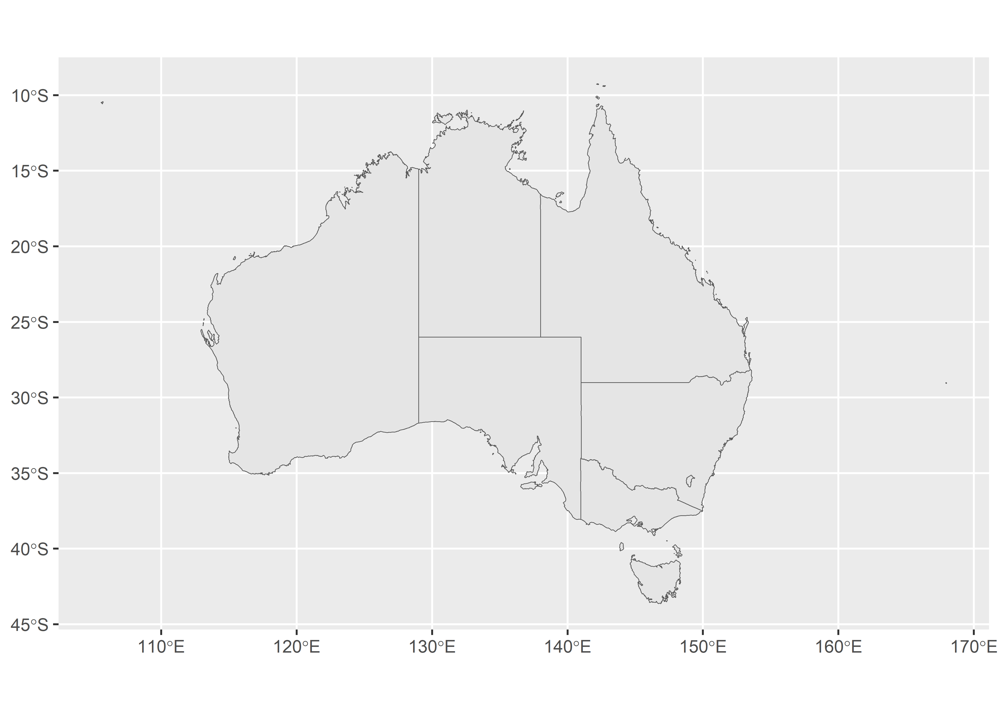
To understand why this works, note that geom_sf() relies on a geometry aesthetic that is not used elsewhere in ggplot2. This aesthetic can be specified in one of three ways:
In the simplest case (illustrated above) when the user does nothing,
geom_sf()will attempt to map it to a column namedgeometry.If the
dataargument is an sf object thengeom_sf()can automatically detect a geometry column, even if it’s not calledgeometry.You can specify the mapping manually in the usual way with
aes(geometry = my_column). This is useful if you have multiple geometry columns.
The coord_sf() function governs the map projection, discussed in sec-mapproj.
6.2.1 Layered maps
In some instances you may want to overlay one map on top of another. The ggplot2 package supports this by allowing you to add multiple geom_sf() layers to a plot. As an example, we’ll use the oz_states data to draw the Australian states in different colours, and will overlay this plot with the boundaries of Australian electoral regions. To do this, there are two preprocessing steps to perform. First, we’ll use dplyr::filter() to remove the “Other Territories” from the state boundaries.
The code below draws a plot with two map layers: the first uses oz_states to fill the states in different colours, and the second uses oz_votes to draw the electoral boundaries. Second, we’ll extract the electoral boundaries in a simplified form using the ms_simplify() function from the rmapshaper package (Teucher and Russell 2018). This is generally a good idea if the original data set (in this case ozmaps::abs_ced) is stored at a higher resolution than your plot requires, in order to reduce the time taken to render the plot.
oz_states <- ozmaps::ozmap_states %>% filter(NAME != "Other Territories")
oz_votes <- rmapshaper::ms_simplify(ozmaps::abs_ced)Now that we have data sets oz_states and oz_votes to represent the state borders and electoral borders respectively, the desired plot can be constructed by adding two geom_sf() layers to the plot:
ggplot() +
geom_sf(data = oz_states, mapping = aes(fill = NAME), show.legend = FALSE) +
geom_sf(data = oz_votes, fill = NA) +
coord_sf()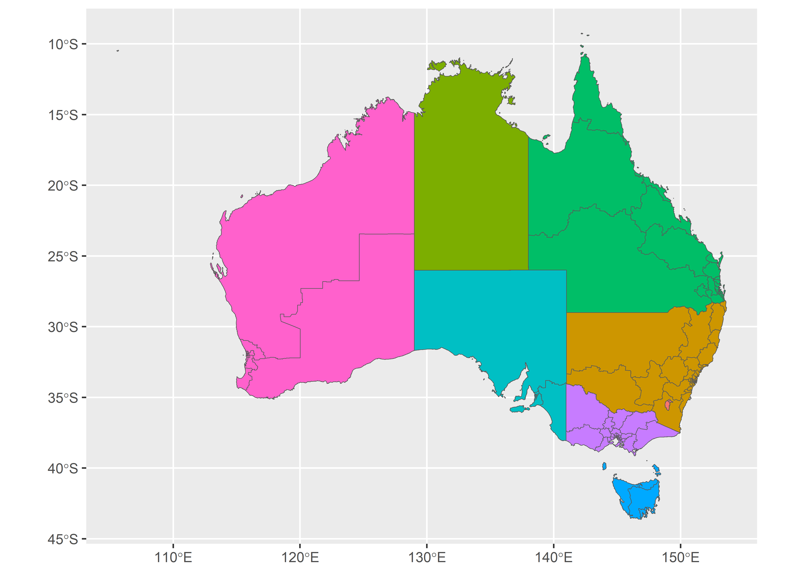
It is worth noting that the first layer to this plot maps the fill aesthetic in onto a variable in the data. In this instance the NAME variable is a categorical variable and does not convey any additional information, but the same approach can be used to visualise other kinds of area metadata. For example, if oz_states had an additional column specifying the unemployment level in each state, we could map the fill aesthetic to that variable.
6.2.2 Labelled maps
Adding labels to maps is an example of annotating plots (sec-annotations) and is supported by geom_sf_label() and geom_sf_text(). For example, while an Australian audience might be reasonably expected to know the names of the Australian states (and are left unlabelled in the plot above) few Australians would know the names of different electorates in the Sydney metropolitan region. In order to draw an electoral map of Sydney, then, we would first need to extract the map data for the relevant electorates, and then add the label. The plot below zooms in on the Sydney region by specifying xlim and ylim in coord_sf() and then uses geom_sf_label() to overlay each electorate with a label:
# Filter electorates in the Sydney metropolitan region
sydney_map <- ozmaps::abs_ced %>% filter(NAME %in% c(
"Sydney", "Wentworth", "Warringah", "Kingsford Smith", "Grayndler", "Lowe",
"North Sydney", "Barton", "Bradfield", "Banks", "Blaxland", "Reid",
"Watson", "Fowler", "Werriwa", "Prospect", "Parramatta", "Bennelong",
"Mackellar", "Greenway", "Mitchell", "Chifley", "McMahon"
))
# Draw the electoral map of Sydney
ggplot(sydney_map) +
geom_sf(aes(fill = NAME), show.legend = FALSE) +
coord_sf(xlim = c(150.97, 151.3), ylim = c(-33.98, -33.79)) +
geom_sf_label(aes(label = NAME), label.padding = unit(1, "mm"))
#> Warning in st_point_on_surface.sfc(sf::st_zm(x)): st_point_on_surface may not
#> give correct results for longitude/latitude data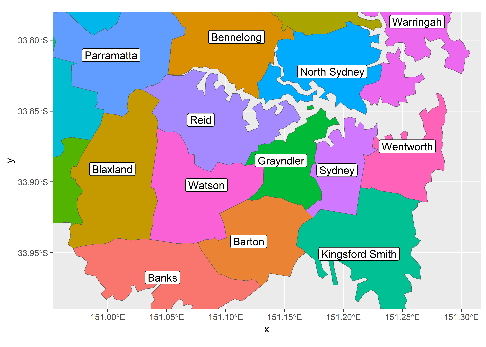
The warning message is worth noting. Internally geom_sf_label() uses the function st_point_on_surface() from the sf package to place labels, and the warning message occurs because most algorithms used by sf to compute geometric quantities (e.g., centroids, interior points) are based on an assumption that the points lie in on a flat two dimensional surface and parameterised with Cartesian co-ordinates. This assumption is not strictly warranted, and in some cases (e.g., regions near the poles) calculations that treat longitude and latitude in this way will give erroneous answers. For this reason, the sf package produces warning messages when it relies on this approximation.
6.2.3 Adding other geoms
Though geom_sf() is special in some ways, it nevertheless behaves in much the same fashion as any other geom, allowing additional data to be plotted on a map with standard geoms. For example, we may wish to plot the locations of the Australian capital cities on the map using geom_point(). The code below illustrates how this is done:
oz_capitals <- tibble::tribble(
~city, ~lat, ~lon,
"Sydney", -33.8688, 151.2093,
"Melbourne", -37.8136, 144.9631,
"Brisbane", -27.4698, 153.0251,
"Adelaide", -34.9285, 138.6007,
"Perth", -31.9505, 115.8605,
"Hobart", -42.8821, 147.3272,
"Canberra", -35.2809, 149.1300,
"Darwin", -12.4634, 130.8456,
)
ggplot() +
geom_sf(data = oz_votes) +
geom_sf(data = oz_states, colour = "black", fill = NA) +
geom_point(data = oz_capitals, mapping = aes(x = lon, y = lat), colour = "red") +
coord_sf()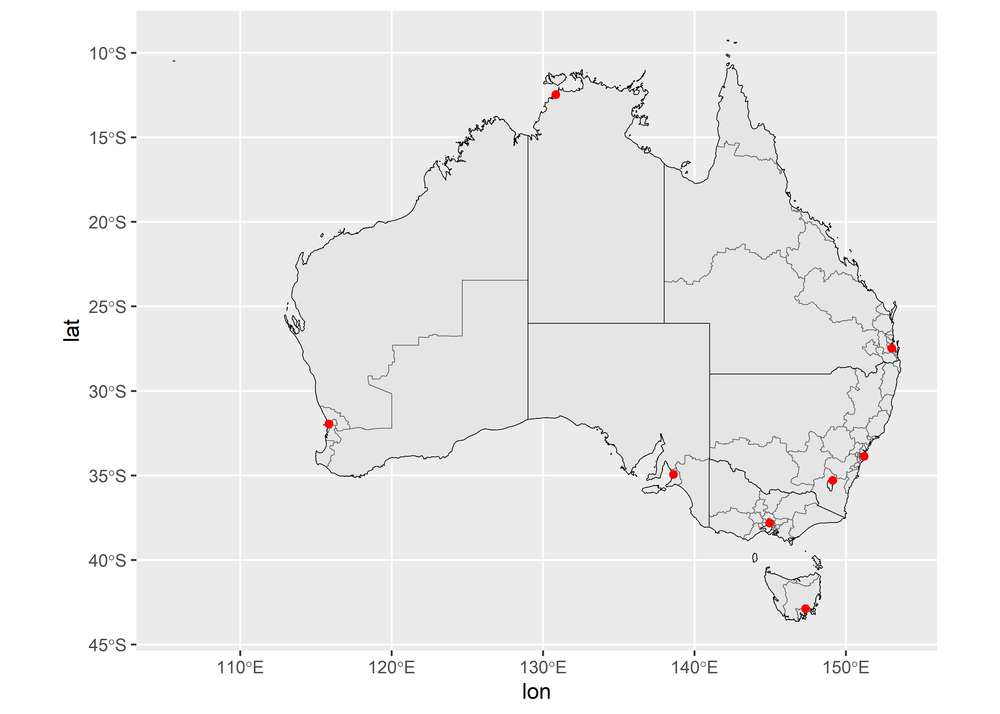
In this example geom_point is used only to specify the locations of the capital cities, but the basic idea can be extended to handle point metadata more generally. For example, if the oz_capitals data were to include an additional variable specifying the number of electorates within each metropolitan area, we could encode that data using the size aesthetic.
6.3 Map projections
At the start of the chapter we drew maps by plotting longitude and latitude on a Cartesian plane, as if geospatial data were no different to other kinds of data one might want to plot. To a first approximation this is okay, but it’s not good enough if you care about accuracy. There are two fundamental problems with the approach.
The first issue is the shape of the planet. The Earth is neither a flat plane, nor indeed is it a perfect sphere. As a consequence, to map a co-ordinate value (longitude and latitude) to a location we need to make assumptions about all kinds of things. How ellipsoidal is the Earth? Where is the centre of the planet? Where is the origin point for longitude and latitude? Where is the sea level? How do the tectonic plates move? All these things are relevant, and depending on what assumptions one makes the same co-ordinate can be mapped to locations that are many meters apart. The set of assumptions about the shape of the Earth is referred to as the geodetic datum and while it might not matter for some data visualisations, for others it is critical. There are several different choices one might consider: if your focus is North America the “North American Datum” (NAD83) is a good choice, whereas if your perspective is global the “World Geodetic System” (WGS84) is probably better.
The second issue is the shape of your map. The Earth is approximately ellipsoidal, but in most instances your spatial data need to be drawn on a two-dimensional plane. It is not possible to map the surface of an ellipsoid to a plane without some distortion or cutting, and you will have to make choices about what distortions you are prepared to accept when drawing a map. This is the job of the map projection.
Map projections are often classified in terms of the geometric properties that they preserve, e.g.
Area-preserving projections ensure that regions of equal area on the globe are drawn with equal area on the map.
Shape-preserving (or conformal) projections ensure that the local shape of regions is preserved.
And unfortunately, it’s not possible for any projection to be shape-preserving and area-preserving. This makes it a little beyond the scope of this book to discuss map projections in detail, other than to note that the simple features specification allows you to indicate which map projection you want to use. For more information on map projections, see Geocomputation with R https://geocompr.robinlovelace.net/ (Lovelace, Nowosad, and Muenchow 2019).
Taken together, the geodetic datum (e.g, WGS84), the type of map projection (e.g., Mercator) and the parameters of the projection (e.g., location of the origin) specify a coordinate reference system, or CRS, a complete set of assumptions used to translate the latitude and longitude information into a two-dimensional map. An sf object often includes a default CRS, as illustrated below:
st_crs(oz_votes)
#> Coordinate Reference System:
#> User input: EPSG:4283
#> wkt:
#> GEOGCRS["GDA94",
#> DATUM["Geocentric Datum of Australia 1994",
#> ELLIPSOID["GRS 1980",6378137,298.257222101,
#> LENGTHUNIT["metre",1]]],
#> PRIMEM["Greenwich",0,
#> ANGLEUNIT["degree",0.0174532925199433]],
#> CS[ellipsoidal,2],
#> AXIS["geodetic latitude (Lat)",north,
#> ORDER[1],
#> ANGLEUNIT["degree",0.0174532925199433]],
#> AXIS["geodetic longitude (Lon)",east,
#> ORDER[2],
#> ANGLEUNIT["degree",0.0174532925199433]],
#> USAGE[
#> SCOPE["Horizontal component of 3D system."],
#> AREA["Australia including Lord Howe Island, Macquarie Islands, Ashmore and Cartier Islands, Christmas Island, Cocos (Keeling) Islands, Norfolk Island. All onshore and offshore."],
#> BBOX[-60.56,93.41,-8.47,173.35]],
#> ID["EPSG",4283]]Most of this output corresponds to a well-known text (WKT) string that unambiguously describes the CRS. This verbose WKT representation is used by sf internally, but there are several ways to provide user input that sf understands. One such method is to provide numeric input in the form of an EPSG code (see https://epsg.org/home.html). The default CRS in the oz_votes data corresponds to EPSG code 4283:
st_crs(oz_votes) == st_crs(4283)
#> [1] TRUEIn ggplot2, the CRS is controlled by coord_sf(), which ensures that every layer in the plot uses the same projection. By default, coord_sf() uses the CRS associated with the geometry column of the data1. Because sf data typically supply a sensible choice of CRS, this process usually unfolds invisibly, requiring no intervention from the user. However, should you need to set the CRS yourself, you can specify the crs parameter by passing valid user input to st_crs(). The example below illustrates how to switch from the default CRS to EPSG code 3112:
ggplot(oz_votes) + geom_sf()
ggplot(oz_votes) + geom_sf() + coord_sf(crs = st_crs(3112))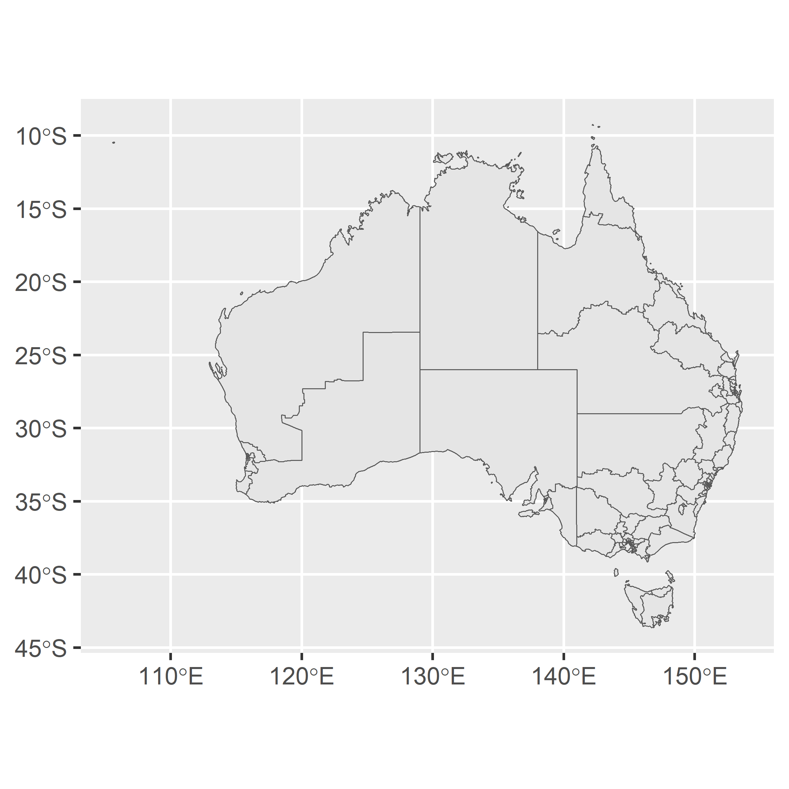
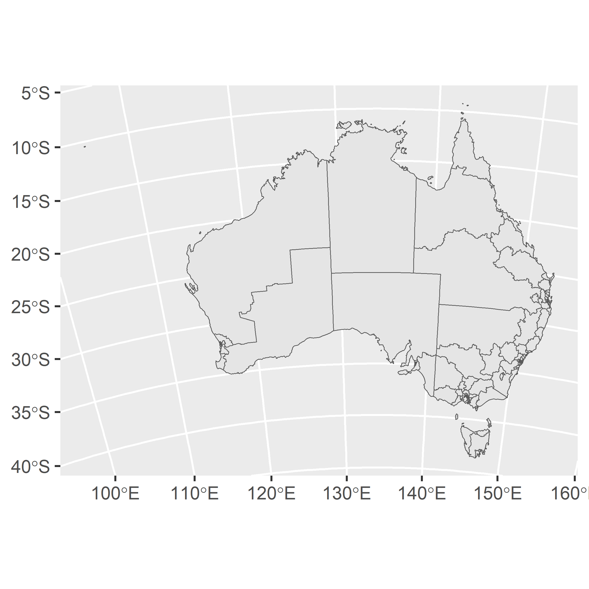
6.4 Working with sf data
As noted earlier, maps created using geom_sf() and coord_sf() rely heavily on tools provided by the sf package, and indeed the sf package contains many more useful tools for manipulating simple features data. In this section we provide an introduction to a few such tools; more detailed coverage can be found on the sf package website https://r-spatial.github.io/sf/.
To get started, recall that one advantage to simple features over other representations of spatial data is that geographical units can have complicated structure. A good example of this in the Australian maps data is the electoral district of Eden-Monaro, plotted below:
edenmonaro <- ozmaps::abs_ced %>% filter(NAME == "Eden-Monaro")
p <- ggplot(edenmonaro) + geom_sf()
p + coord_sf(xlim = c(147.75, 150.25), ylim = c(-37.5, -34.5))
p + coord_sf(xlim = c(150, 150.25), ylim = c(-36.3, -36)) 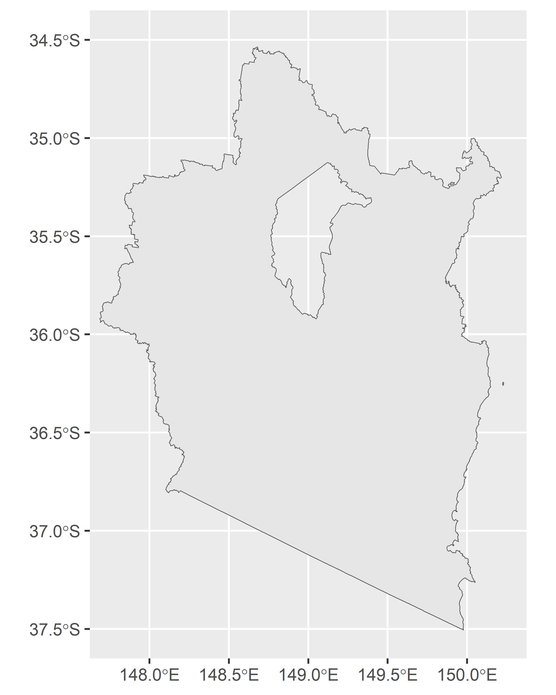
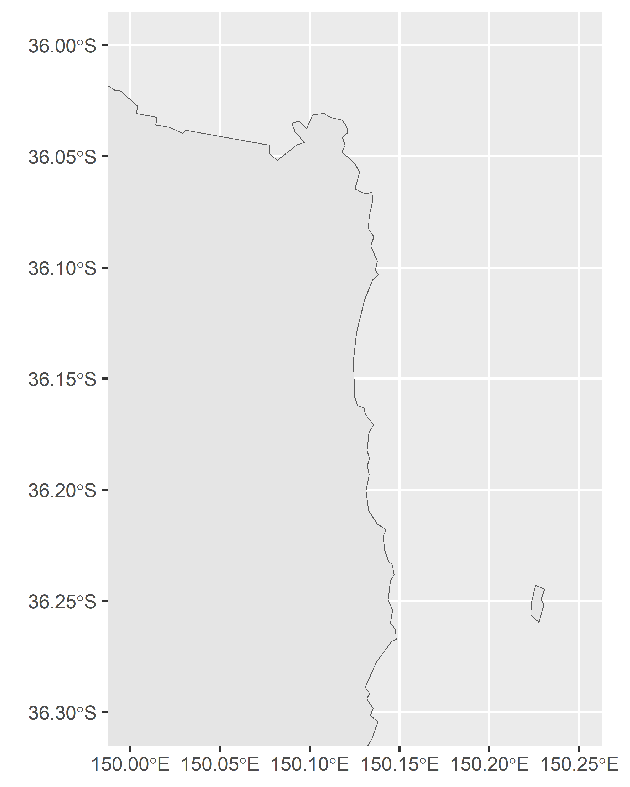
As this illustrates, Eden-Monaro is defined in terms of two distinct polygons, a large one on the Australian mainland and a small island. However, the large region has a hole in the middle (the hole exists because the Australian Capital Territory is a distinct political unit that is wholly contained within Eden-Monaro, and as illustrated above, electoral boundaries in Australia do not cross state lines). In sf terminology this is an example of a MULTIPOLYGON geometry. In this section we’ll talk about the structure of these objects and how to work with them.
First, let’s use dplyr to grab only the geometry object:
edenmonaro <- edenmonaro %>% pull(geometry)The metadata for the edenmonaro object can be accessed using helper functions. For example, st_geometry_type() extracts the geometry type (e.g., MULTIPOLYGON), st_dimension() extracts the number of dimensions (2 for XY data, 3 for XYZ), st_bbox() extracts the bounding box as a numeric vector, and st_crs() extracts the CRS as a list with two components, one for the EPSG code and the other for the proj4string. For example:
st_bbox(edenmonaro)
#> xmin ymin xmax ymax
#> 147.7 -37.5 150.2 -34.5Normally when we print the edenmonaro object the output would display all the additional information (dimension, bounding box, geodetic datum etc) but for the remainder of this section we will show only the relevant lines of the output. In this case edenmonaro is defined by a MULTIPOLYGON geometry containing one feature:
edenmonaro
#> Geometry set for 1 feature
#> Geometry type: MULTIPOLYGON
#> MULTIPOLYGON (((150 -36.2, 150 -36.2, 150 -36.3...However, we can “cast” the MULTIPOLYGON into the two distinct POLYGON geometries from which it is constructed using st_cast():
st_cast(edenmonaro, "POLYGON")
#> Geometry set for 2 features
#> Geometry type: POLYGON
#> POLYGON ((150 -36.2, 150 -36.2, 150 -36.3, 150 ...
#> POLYGON ((148 -36.7, 148 -36.7, 148 -36.7, 148 ...To illustrate when this might be useful, consider the Dawson electorate, which consists of 69 islands in addition to a coastal region on the Australian mainland.
dawson <- ozmaps::abs_ced %>%
filter(NAME == "Dawson") %>%
pull(geometry)
dawson
#> Geometry set for 1 feature
#> Geometry type: MULTIPOLYGON
#> MULTIPOLYGON (((148 -19.9, 148 -19.8, 148 -19.8...
ggplot(dawson) +
geom_sf() +
coord_sf()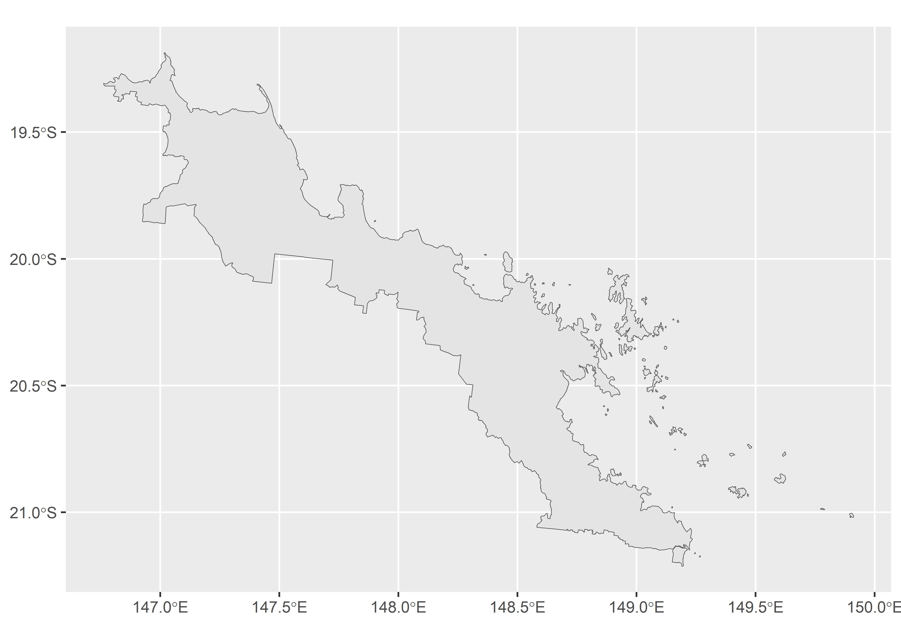
Suppose, however, our interest is only in mapping the islands. If so, we can first use the st_cast() function to break the Dawson electorate into the constituent polygons. After doing so, we can use st_area() to calculate the area of each polygon and which.max() to find the polygon with maximum area:
dawson <- st_cast(dawson, "POLYGON")
which.max(st_area(dawson))
#> [1] 69The large mainland region corresponds to the 69th polygon within Dawson. Armed with this knowledge, we can draw a map showing only the islands:
ggplot(dawson[-69]) +
geom_sf() +
coord_sf()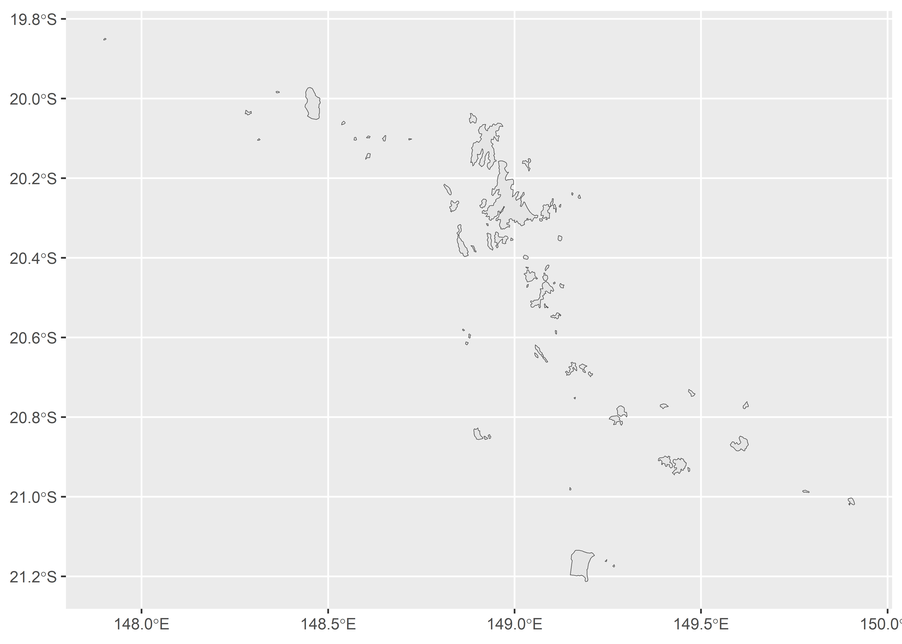
6.5 Raster maps
A second way to supply geospatial information for mapping is to rely on raster data. Unlike the simple features format, in which geographical entities are specified in terms of a set of lines, points and polygons, rasters take the form of images. In the simplest case raster data might be nothing more than a bitmap file, but there are many different image formats out there. In the geospatial context specifically, there are image formats that include metadata (e.g., geodetic datum, coordinate reference system) that can be used to map the image information to the surface of the Earth. For example, one common format is GeoTIFF, which is a regular TIFF file with additional metadata supplied. Happily, most formats can be easily read into R with the assistance of GDAL (the Geospatial Data Abstraction Library, https://gdal.org/). For example the sf package contains a function sf::gdal_read() that provides access to the GDAL raster drivers from R. However, you rarely need to call this function directly, as there are other high level functions that take care of this for you.
As an illustration, we’ll use a satellite image taken by the Himawari-8 geostationary satellite operated by the Japan Meteorological Agency, and originally sourced from the Australian Bureau of Meteorology website. This image is stored in a GeoTIFF file called “IDE00422.202001072100.tif”.2 To import this data into R, we’ll use the stars package (Pebesma 2020) to create a stars objects:
library(stars)
#> Cargando paquete requerido: abind
sat_vis <- read_stars(
"IDE00422.202001072100.tif",
RasterIO = list(nBufXSize = 600, nBufYSize = 600)
)In the code above, the first argument specifies the path to the raster file, and the RasterIO argument is used to pass a list of low-level parameters to GDAL. In this case, we have used nBufXSize and nBufYSize to ensure that R reads the data at low resolution (as a 600x600 pixel image). To see what information R has imported, we can inspect the sat_vis object:
sat_vis
#> stars object with 3 dimensions and 1 attribute
#> attribute(s), summary of first 1e+05 cells:
#> Min. 1st Qu. Median Mean 3rd Qu. Max.
#> IDE00422.202001072100.tif 0 0 0 18.1 0 255
#> dimension(s):
#> from to offset delta refsys point x/y
#> x 1 600 -5500000 18333 Geostationary_Satellite FALSE [x]
#> y 1 600 5500000 -18333 Geostationary_Satellite FALSE [y]
#> band 1 3 NA NA NA NAThis output tells us something about the structure of a stars object. For the sat_vis object the underlying data is stored as a three-dimensional array, with x and y dimensions specifying the spatial data. The band dimension in this case corresponds to the colour channel (RGB) but is redundant for this image as the data are greyscale. In other data sets there might be bands corresponding to different sensors, and possibly a time dimension as well. Note that the spatial data is also associated with a coordinate reference system (referred to as “refsys” in the output).
To plot the sat_vis data in ggplot2, we can use the geom_stars() function provided by the stars package. A minimal plot might look like this:
ggplot() +
geom_stars(data = sat_vis) +
coord_equal()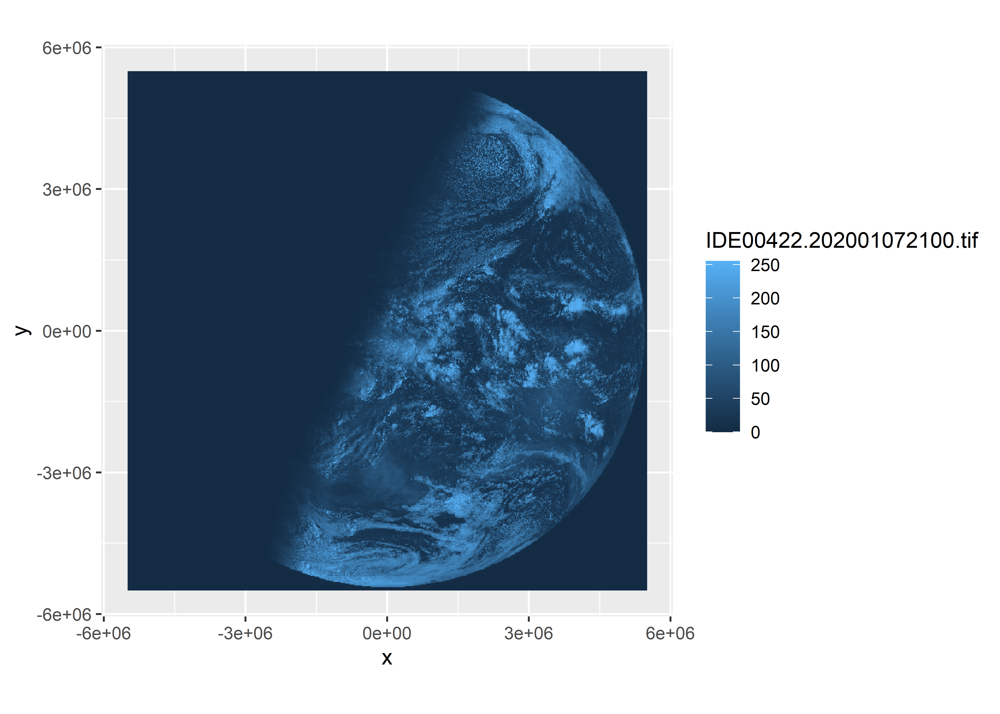
The geom_stars() function requires the data argument to be a stars object, and maps the raster data to the fill aesthetic. Accordingly, the blue shading in the satellite image above is determined by the ggplot2 scale, not the image itself. That is, although sat_vis contains three bands, the plot above only displays the first one, and the raw data values (which range from 0 to 255) are mapped onto the default blue palette that ggplot2 uses for continuous data. To see what the image file “really” looks like we can separate the bands using facet_wrap():
ggplot() +
geom_stars(data = sat_vis, show.legend = FALSE) +
facet_wrap(vars(band)) +
coord_equal() +
scale_fill_gradient(low = "black", high = "white")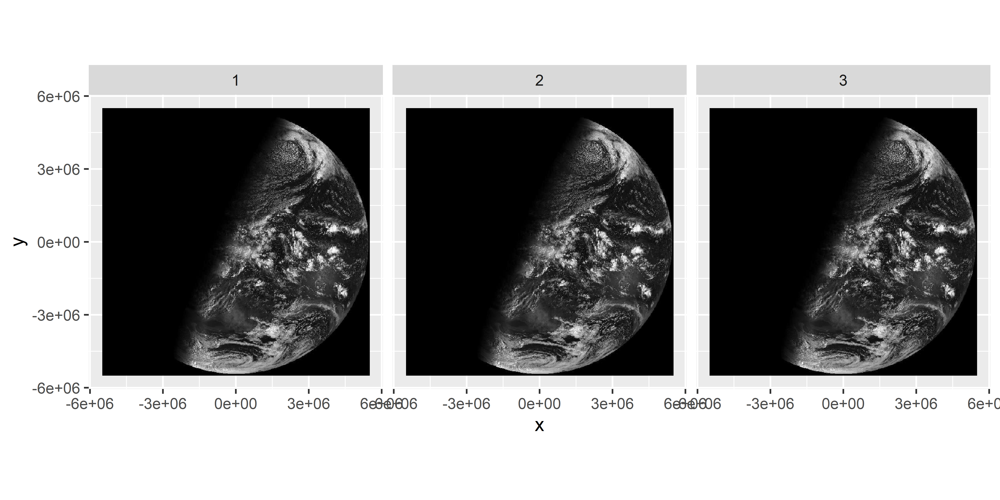
One limitation to displaying only the raw image is that it is not easy to work out where the relevant landmasses are, and we may wish to overlay the satellite data with the oz_states vector map to show the outlines of Australian political entities. However, some care is required in doing so because the two data sources are associated with different coordinate reference systems. To project the oz_states data correctly, the data should be transformed using the st_transform() function from the sf package. In the code below, we extract the CRS from the sat_vis raster object, and transform the oz_states data to use the same system.
oz_states <- st_transform(oz_states, crs = st_crs(sat_vis))Having done so, we can now draw the vector map over the top of the raster image to make the image more interpretable to the reader. It is now clear from inspection that the satellite image was taken during the Australian sunrise:
ggplot() +
geom_stars(data = sat_vis, show.legend = FALSE) +
geom_sf(data = oz_states, fill = NA, color = "white") +
coord_sf() +
theme_void() +
scale_fill_gradient(low = "black", high = "white")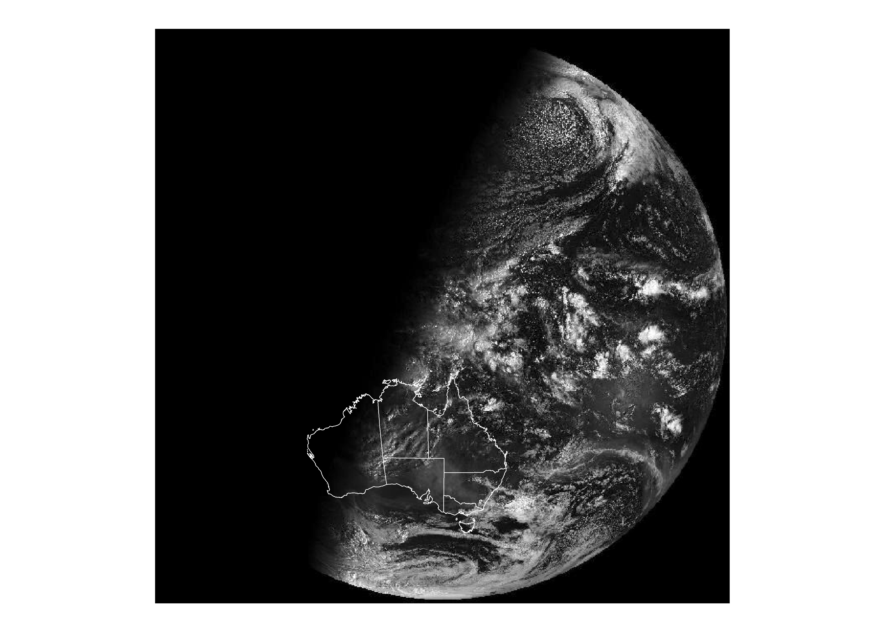
What if we wanted to plot more conventional data over the top? A simple example of this would be to plot the locations of the Australian capital cities per the oz_capitals data frame that contains latitude and longitude data. However, because these data are not associated with a CRS and are not on the same scale as the raster data in sat_vis, these will also need to be transformed. To do so, we first need to create an sf object from the oz_capitals data using st_as_sf():
cities <- oz_capitals %>%
st_as_sf(coords = c("lon", "lat"), crs = 4326, remove = FALSE)This projection is set using the EPSG code 4326, an ellipsoidal projection using the latitude and longitude values as co-ordinates and relying on the WGS84 datum. Having done so we can now transform the co-ordinates from the latitude-longitude geometry to the match the geometry of our sat_vis data:
cities <- st_transform(cities, st_crs(sat_vis))The transformed data can now be overlaid using geom_sf():
ggplot() +
geom_stars(data = sat_vis, show.legend = FALSE) +
geom_sf(data = oz_states, fill = NA, color = "white") +
geom_sf(data = cities, color = "red") +
coord_sf() +
theme_void() +
scale_fill_gradient(low = "black", high = "white")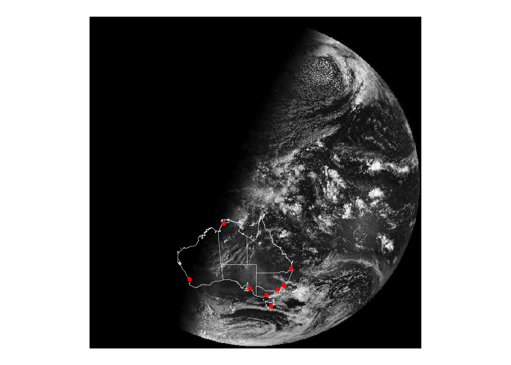
This version of the image makes clearer that the satellite image was taken at approximately sunrise in Darwin: the sun had risen for all the eastern cities but not in Perth. This could be made clearer in the data visualisation using the geom_sf_text() function to add labels to each city. For instance, we could add another layer to the plot using code like this,
geom_sf_text(data = cities, mapping = aes(label = city)) though some care would be required to ensure the text is positioned nicely (see sec-annotations).
6.6 Data sources
The USAboundaries package, https://github.com/ropensci/USAboundaries contains state, county and zip code data for the US (Mullen and Bratt 2018). As well as current boundaries, it also has state and county boundaries going back to the 1600s.
The tigris package, https://github.com/walkerke/tigris, makes it easy to access the US Census TIGRIS shapefiles (Walker 2019). It contains state, county, zipcode, and census tract boundaries, as well as many other useful datasets.
The rnaturalearth package (South 2017) bundles up the free, high-quality data from https://naturalearthdata.com/. It contains country borders, and borders for the top-level region within each country (e.g. states in the USA, regions in France, counties in the UK).
The osmar package, https://cran.r-project.org/package=osmar wraps up the OpenStreetMap API so you can access a wide range of vector data including individual streets and buildings (Eugster and Schlesinger 2010).
If you have your own shape files (
.shp) you can load them into R withsf::read_sf().
Eugster, Manuel J. A., and Thomas Schlesinger. 2010. “Osmar: OpenStreetMap and r.” R Journal. http://osmar.r-forge.r-project.org/RJpreprint.pdf.
Lovelace, Robin, Jakub Nowosad, and Jannes Muenchow. 2019. Geocomputation with R. CRC Press.
Mullen, Lincoln A., and Jordan Bratt. 2018. “USAboundaries: Historical and Contemporary Boundaries of the United States of America.” Journal of Open Source Software 3: 314. https://doi.org/10.21105/joss.00314.
Pebesma, Edzer. 2018. “Simple Features for R: Standardized Support for Spatial Vector Data.” The R Journal 10 (1): 439–46. https://doi.org/10.32614/RJ-2018-009.
———. 2020. Stars: Spatiotemporal Arrays, Raster and Vector Data Cubes.
South, Andy. 2017. Rnaturalearth: World Map Data from Natural Earth. https://CRAN.R-project.org/package=rnaturalearth.
Sumner, Michael. 2019. Ozmaps: Australia Maps. https://CRAN.R-project.org/package=ozmaps.
Teucher, Andy, and Kenton Russell. 2018. Rmapshaper: Client for ’Mapshaper’ for ’Geospatial’ Operations. https://CRAN.R-project.org/package=rmapshaper.
Walker, Kyle. 2019. Tigris: Load Census TIGER/Line Shapefiles. https://CRAN.R-project.org/package=tigris.
If there are multiple data sets with a different associated CRS, it uses the CRS from the first layer.↩︎
If you want to try this code yourself, you can find a copy of the image on the github repository for the book: https://github.com/hadley/ggplot2-book/raw/master/IDE00422.202001072100.tif.↩︎